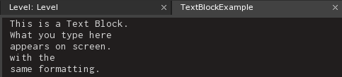
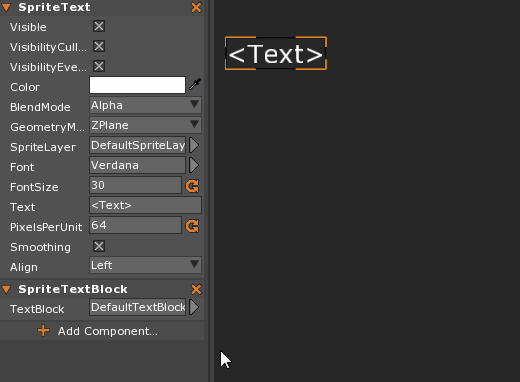
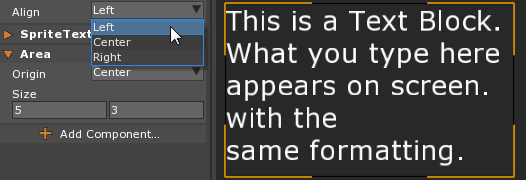

TextBlock
TextBlock resources are used to organize and format the visual style of SpriteText in a project. They are a very helpful resource any time more than a single sentence of text needs to be used.
Common Uses
- Organizing on screen text
- High volume text data entry
- Easier text swapping
Using a TextBlock
Adding Text using the TextBlock requires two elements: a TextBlock resource and and a SpriteTextBlock component. The SpriteTextBlock component is added to the object whose SpriteText needs to be changed. These two work in tandem to change the Text property of the SpriteText component. To create a new TextBlock, use Command : Add and select TextBlock from the resource list. This will open a new TextBlock in a new Tab where text may be written. After entering the desired text, simply add the SpriteTextBlock component to the Game Object and set the TextBlock property to the new TextBlock.
Note
While TextBlock.Text is bound in Zilch, it is read only and therefore cannot change the text at runtime. The TextBlock will need to be made as a resource and set prior to running the game.


As can be seen in the example above, one feature of TextBlock is that when applied to a SpriteTextBlock, the formatting in regards to line breaks is kept. One problem that remains, however, is that changing the Align property of the SpriteText component will change the Transform of the of the text itself, instead of adjusting the alignment.
The Area component can help solve this problem. While SpriteTextBlock keeps the formatting of the TextBlock, it has no alignment options of its own. Adding the Area Component allows the user to define the area the text is displayed in, changing the alignment of the text inside that area. It will also use word wrapping to make sure no text spills outside of the defined area.
